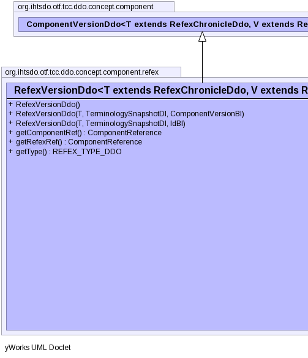
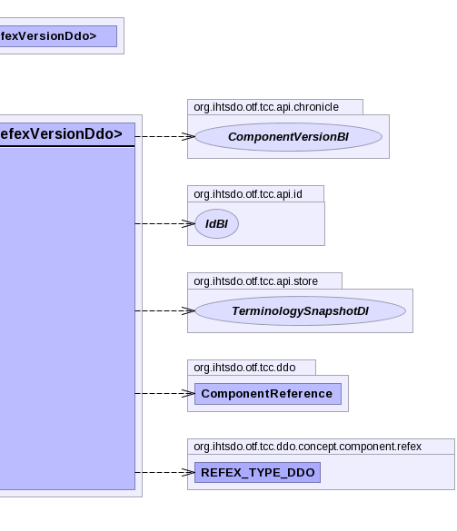

public class RefexVersionDdo<T extends RefexChronicleDdo,V extends RefexVersionDdo> extends ComponentVersionDdo<T,V>
|  |  |
authorReferenceProperty, fxTimeProperty, moduleReferenceProperty, pathReferenceProperty, statusReferencePropertychronicleunspecifiedUserUuid| Constructor and Description |
|---|
RefexVersionDdo() |
RefexVersionDdo(T chronicle,
TerminologySnapshotDI ss,
ComponentVersionBI another) |
RefexVersionDdo(T chronicle,
TerminologySnapshotDI ss,
IdBI id) |
| Modifier and Type | Method and Description |
|---|---|
ComponentReference |
getComponentRef() |
ComponentReference |
getRefexRef() |
REFEX_TYPE_DDO |
getType() |
afterUnmarshal, getAdditionalIds, getAnnotations, getChronicle, getComponentNid, getConcept, getIdCount, getPrimordialComponentUuid, getUuids, getVersionCount, getVersionsauthorReferenceProperty, fxTimeProperty, getAuthorReference, getFxTime, getModuleReference, getPathReference, getStatus, getStatusString, getViewCoordinateUuid, informAboutUuid, moduleReferenceProperty, pathReferenceProperty, setAuthorReference, setFxTime, setModuleReference, setPathReference, setStatus, setStatusString, setViewCoordinateUuid, statusReferenceProperty, toStringpublic RefexVersionDdo()
public RefexVersionDdo(T chronicle, TerminologySnapshotDI ss, ComponentVersionBI another) throws IOException, ContradictionException
IOExceptionContradictionExceptionpublic RefexVersionDdo(T chronicle, TerminologySnapshotDI ss, IdBI id) throws IOException, ContradictionException
IOExceptionContradictionExceptionpublic ComponentReference getComponentRef()
public ComponentReference getRefexRef()
public REFEX_TYPE_DDO getType()
Copyright © 2013 International Health Terminology Standards Development Organisation. All rights reserved.